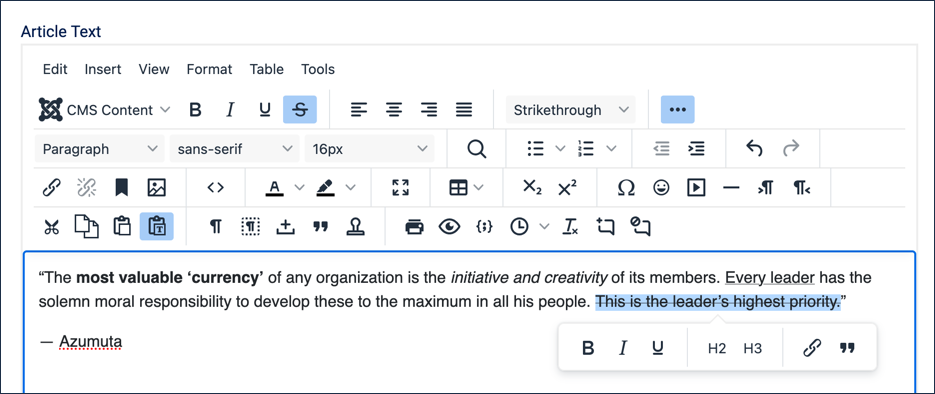
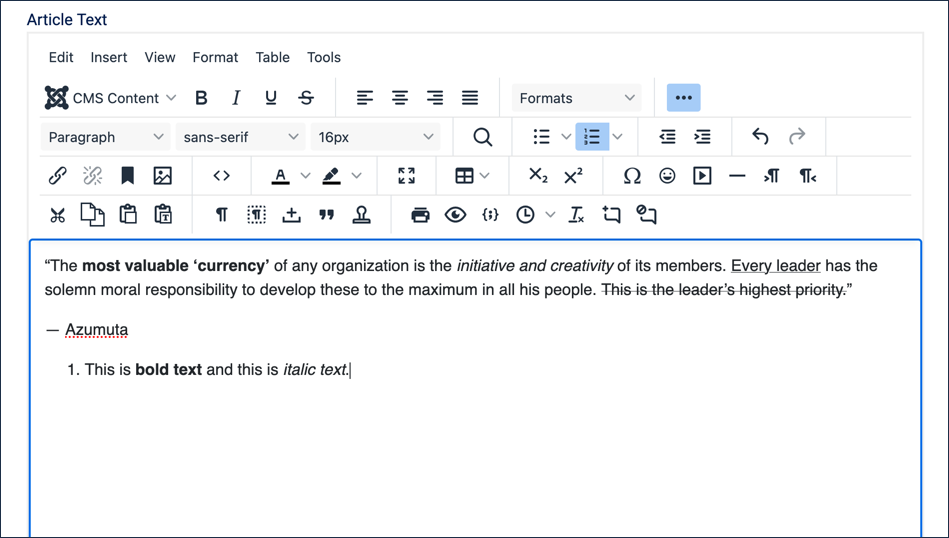
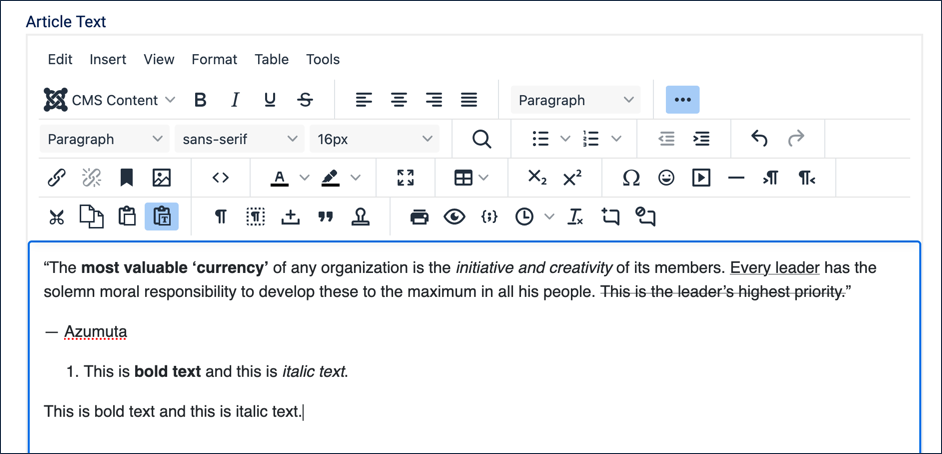
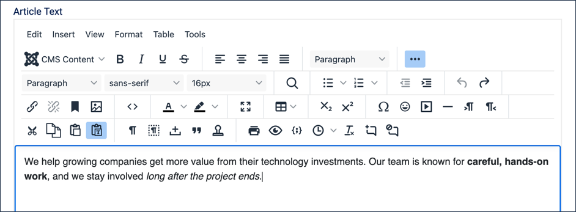

Using the text editing tools in Joomla, learn how to create bold, italic, underline and strikethrough text in an article, and how to paste in text without carrying over unwanted formatting. In this tutorial we'll also start a new article, Our Services, which we'll continue building throughout this section.
Log in to Joomla backend and navigate to the Home Dashboard.
In the Administrator Menu, click Content > Articles.
Click New. Result: A new-article form appears.
Title:Our Services
The text editing area consists of a toolbar and an area in which to enter text. By default, the toolbar only shows a handful of icons.
Click the ⋯ (ellipsis) icon at the end of the toolbar. Result: The toolbar expands to a second row, revealing many more tools — headings, lists, links, tables, and more. Click the ellipsis again to collapse it back to the simplified view. Note: We'll refer back to this expand/collapse step in later tutorials as we need tools that aren't in the simplified toolbar.
Hover over the toolbar items and note that a tool tip displays the name of the item.
Click into the text area and type a line of practice text — we'll delete it shortly, so anything will do.
Highlight the practice text, then click the Bold (B) icon. Result: The icon is highlighted, indicating Bold is selected, and the text becomes bold.
Clicking the icon again removes the formatting.
Clicking on any of the toolbar's formatting icons toggles them on or off.
Try the Italic, Underline, and Strikethrough icons on the same practice text the same way.
Highlight the practice text again. Result: A small popup toolbar appears with bold, italic, underline, and a few other commonly-used tools.
Clicking on any of the icons updates the selected text.
The popup toolbar and main toolbar icons both update the text the same way.

Practice text with all four formats applied, and the popup toolbar open
Copy the following example text, formatting included: This is bold text and this is italic text.
Click below the practice text and paste it into the text area. Result: The pasted text keeps its bold and italic formatting — a normal paste carries formatting over from the source, which isn't always what you want. Note: If you copied the example text straight from this tutorial page, you may notice it pastes in as a numbered list item, too — that's because the example lives inside a numbered step here. Paste carries over more than just bold and italic; it can carry over structure like list formatting as well.

The example text, pasted normally — it kept its bold, italic, and even its list numbering
In the toolbar, click the Paste as text icon (it looks like a clipboard with a "T"). Result: The icon is highlighted, indicating Paste as text mode is on. Clicking it again toggles it off.
Click below the pasted text, then paste the same example text again. Result: This paste appears directly below the first, but with no formatting at all — plain text, no list numbering. With both pastes visible at once, the difference is easy to see: formatting (and structure) carried over on the first, and was stripped entirely on the second.

Both pastes stacked — formatted above, plain text below
Click the Paste as text icon again to toggle it back off.
Delete the practice text and both pasted examples — we're done experimenting, and now we'll write the article's real opening paragraph.
Type (or copy and paste as text) the following as the Article Text, then apply Bold to the first highlighted phrase and Italic to the second, as shown:
We help growing companies get more value from their technology investments. Our team is known for careful, hands-on work, and we stay involved long after the project ends.

The finished intro paragraph, with bold and italic applied
Click Save & Close. Result:Our Services is saved with its opening paragraph. We'll reopen and build on it in the next tutorial.
Concepts
The text editing area is referred to as the TinyMCE editor, a plugin that comes standard with Joomla.
The options available can be customised by the administrator.
Underline is conventionally reserved for hyperlinks in web content; using it elsewhere for emphasis can make readers think text is a link when it isn't. Bold and italic are generally safer choices for emphasis.
Text copied from other sources — Word documents, web pages, PDFs — often carries hidden formatting along with it: fonts, colours, spacing, that don't match your site. Paste as text strips all of that out, leaving only the plain text, which you can then format the way you want using the editor's own tools.